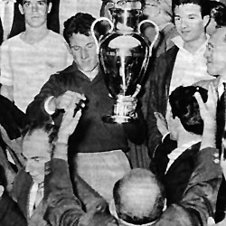

Santiago Bernabéu Yeste terpilih menjadi presiden Real Madrid tahun 1943. Di bawah kepemimpinannya, Real Madrid kemudian berhasil membangun Stadion Santiago Bernabéu dan tempat berlatih klub di Ciudad Deportiva yang sebelumnya sempat rusak akibat Perang Saudara Spanyol. Pada 1953, Bernabeu kemudian mulai membangun tim dengan cara mendatangkan pemain-pemain asing,salah satunya adalah Alfredo Di Stéfano.
Alfredo Di Stéfano, memimpin klub untuk memenangkan lima Piala Eropa berturut-turut (saat ini, Liga Champions) Pada tahun 1955, berdasar dari ide yang diusulkan oleh jurnalis olahraga Perancis dan editor dari L'Equipe, Gabriel Hanot, Bernabéu, Bedrignan, dan Gusztáv Sebes menciptakan sebuah turnamen sepak bola percobaan dengan mengundang klub-klub terbaik dari seluruh daratan Eropa. Turnamen ini kemudian menjadi dasar dari Liga Champions UEFA yang berlangsung saat ini.
Santiago Bernabéu Yeste. Di bawah bimbingan Bernabéu, Real Madrid memantapkan dirinya sebagai kekuatan utama dalam sepak bola, baik di Spanyol maupun di Eropa. Real Madrid memenangkan Piala Eropa lima kali berturut-turut antara tahun 1956 dan 1960, di antaranya kemenangan 7–3 atas klub Jerman, Eintracht Frankfurt pada tahun 1960. Setelah kelima berturut-turut sukses, Real secara permanen diberikan piala asli turnamen dan mendapatkan hak untuk memakai lencana kehormatan UEFA.
Real Madrid menjuarai Liga Champions pada tahun 1966. Real Madrid kemudian memenangkan Piala Eropa untuk keenam kalinya pada tahun 1966 setelah mengalahkan FK Partizan 2–1 pada pertandingan final dengan komposisi tim yang seluruhnya terdiri dari pemain berkebangsaan Spanyol, sekaligus menjadi pertama kalinya dalam sejarah pertandingan Eropa. Tim ini kemudian dikenal lewat julukan "Ye-ye". Nama "Ye-ye" berasal dari "Yeah, yeah, yeah" chorus dalam lagu The Beatles berjudul "She Loves You" setelah empat anggota tim berpose untuk harian Diario Marca mengenakan wig khas The Beatles. Generasi "Ye-ye" juga berhasil menjadi juara kedua Piala Champions pada tahun 1962 dan 1964.
Amancio Amaro, Kapten Yé-yé.Pada 1970-an, Real Madrid memenangi kejuaraan liga sebanyak 5 kali disertai 3 kali juara Piala Spanyol. Madrid kemudian bermain pada final Piala Winners UEFA pertamanya pada tahun 1971 dan kalah dengan skor 1–2 dari klub Inggris, Chelsea. Pada tanggal 2 Juli 1978, presiden klub Santiago Bernabéu meninggal ketika Piala Dunia FIFA sedang berlangsung di Argentina. FIFA kemudian menetapkan tiga hari berkabung untuk menghormati dirinya selama turnamen berlangsung.[23] Tahun berikutnya, klub mengadakan Kejuaraan Trofi Santiago Bernabéu sebagai bentuk penghormatan pada mantan presidennya tersebut.


 +6285799982916
+6285799982916
 RIZQI ZULFA FAUZY
RIZQI ZULFA FAUZY